(click to enlarge)
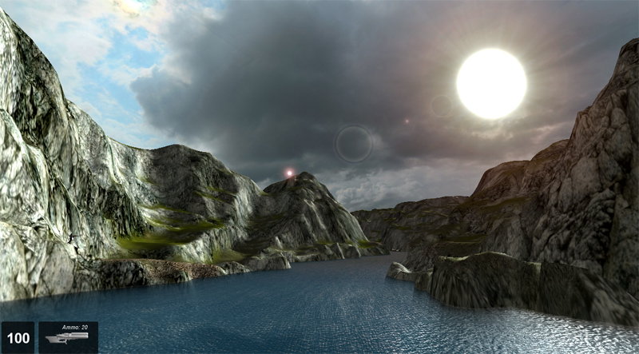
Introduction
The Torque 3D World Editor has a complete system for creating rivers and other small bodies of water. The River Editor is built-in WYSIWYG (What-You-See-Is-What-You-Get) editor with real-time feedback, giving you full control over how you would like to your river to appear.
(click to enlarge)
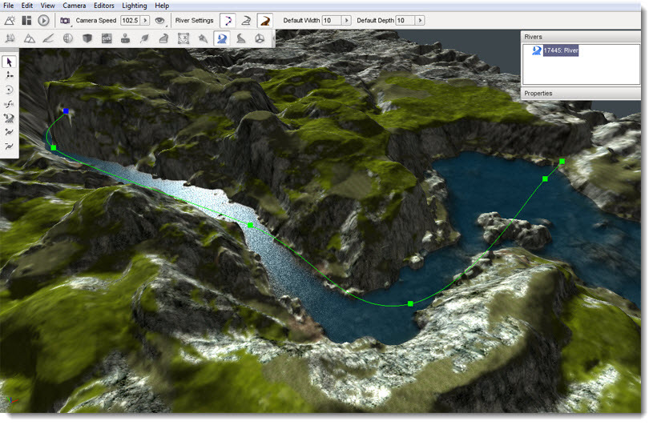
Setup
To get started, open the Toolbox and create a new project from the Full template then load the Empty Terrain level.
Use the Terrain Editor tools to create a channel for your new river. This can be as simple or as detailed as you would like it to be. If you are unsure how to use the Terrain Editor, refer to the Terrain Editing section.
Interface
To access the River Editor you can either activate it from the main menu by selecting Editors > River Editor:
menu>Editors>River Editor
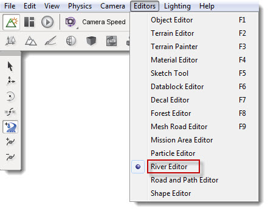
Alternatively you can click the River icon from the World Editor Tools Selector Bar:
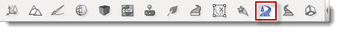
The editor has two main parts, one where you can add and manipulate the river nodes (control points) for creation, the other for adjusting the river properties to create the river style (depth, width, flow, ripples etc).
Whenever the River Editor is active three sections of the screen are updated to contain the editors tool.
On the right side of the screen are three panes. At the top is the Rivers pane which contains a list of all the rivers currently in the level, if any are present. In the middle is the River Nodes pane which displays the properties of the currently selected river control point. At the bottom is the Properties Pane which displays the properties of the currently selected river.
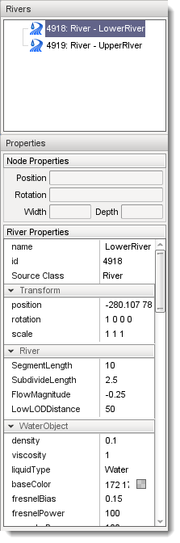
At the left of the screen the River placement tools will appear and are used to create and modify rivers and their control points.
Hint: These tool bars are floating and can be moved to any part of your screen.
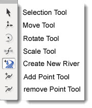
At the top of the screen in the World Editor Tool Settings Bar, a new set of icons will appear when the River Editor is active.
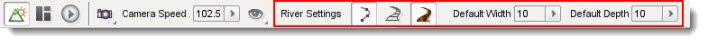
These icons and their associated values will enable you to quickly set up the width and depth of the river and modify the editor to show and hide some visual aids which can be used to guide your river placement.
Adding a River
The river is created by placing a series of control points across the terrain which defines the path you would like your river to follow. Each control point, also called a "node", will give you control of how the river will look at any given point .By adjusting each of these points we can have full control of where our river will go, its size, and its orientation.
The default width and depth of control points can be set using the Default Width and Default Height properties on the Tool Settings Bar at the top of the editor window. Any new rivers will be created using these settings until you change their values again.
To create a new river select the Create River icon 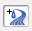 from the tool bar then click on the terrain with the left mouse button where you would like to start your river. Move the mouse away from the clicked location to see the results. Each time you click the terrain you will see three things: (1) a green square which represents the river location that you just placed; (2) a blue square which represents the next location that will be placed the river if you press mouse button again; (3) the surface of the river that will be placed the next time you click the button. Move the mouse to the next point on the terrain that you wish your river to travel to and then click again. Continue moving and clicking until you are finished with the initial placement of your river.
To complete the river placement process press the ESC key. This action will exit the Create River tool leaving your new river selected and ready for adjustments.
To abort a river creation operation without placing a river at all press the Esc key before selecting a second river point. Once a second river point has been placed the only way to remove the river completely is to delete it, as explained later.
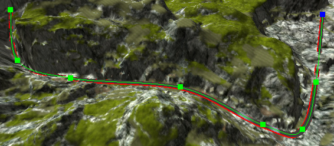
The new River will also show up in the Rivers list at the right top of the screen.
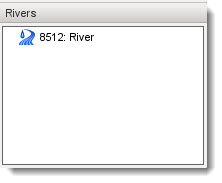
You will notice that the river itself is color-coded. These visual aids will be of help in adjusting your river.
RED - The red lines at the edges of the river represent the river bounds. These lines need to be moved so that they are hidden by the terrain river bank to avoid gaps between the edge of the water and the surrounding terrain.
GREEN - The green surface represents the depth of the river. This surface needs to be adjusted to be just below the terrain at every point in order for underwater views to be correct. Whenever this surface is above the terrain it will cause an "air bubble" between the bottom of the water and the terrain.
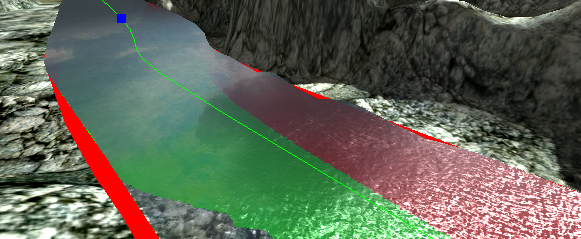
The new River may not look correct but with the following set of
tools you will be able to adjust the width, depth
and path.
The River Editor provides several tools for modifying rivers after they have been created. If at any time you make a mistake with any tool, you can press CTRL+Z to undo it.
Selection Tool
Once you have created your initial river you may need to edit some or all of the control points. This tool will allow you to directly select any created point for further editing. To activate the Selection Tool click its icon on the Tool Selector bar. Note that the River Editor will automatically select this tool when you have finished creating a new river.
An entire river can be selected by clicking anywhere on a river other than one of its control points. This type of selection will result in the river being highlighted with a "spline", which is a curved line that runs along the center line of the river, and a series of green squares which represent the rivers control points. There are no operations that can be performed on a river as a whole within the River Editor. Selecting a river allows you to see its centerline and it control points for individual selection and manipulation. To perform operations on the entire river such as moving it to a new location use the Object Editors tools as with any other shape in your level.
Control points can be selected individually to adjust each point as necessary. To select a control point left click on one of the colored squares that represent a rivers control points. A selected control point will turn blue.
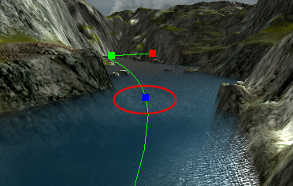
Selecting a control point also causes the Properties pane on the right of the screen to be updated to display the current property values of the control point. The Node Properties section will display the position, rotation, width and depth of the selected control point. Values can be directly entered into these fields to modify the point or the Move Tool can be used to manipulate the point using the mouse.
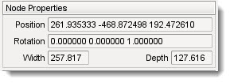
A selected control point will turn blue.
Moving a River
If at any time you are unhappy with the placement of a selected River control point you can use the Move Point tool to adjust its position. To activate the Move Point tool click its icon 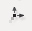 in the Tool Selector bar. The move gizmo will appear:
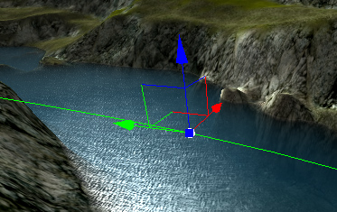
The move gizmo is used to move the river point to a new location. Left mouse click on any arrowhead then drag the mouse to move the point along that arrows axis. Release the mouse button to relocate the control point to that new location. Left mouse click on the colored square at the origin of the axes then drag the mouse to freely move the point to without regard to any axis.
Scaling a River
The width and depth of a river can be directly adjusted at a selected control point by using the Scale Point tool. To activate the Scale Point tool click on its icon 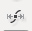 on the Tool Selector. The scaling gizmo will appear:
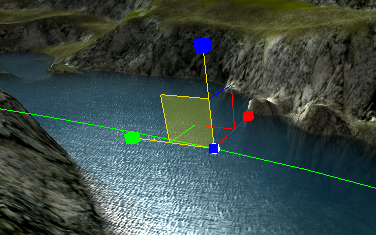
Left mouse click on the colored cube at the end of any axis then drag the mouse while holding the button down to increase or decrease the size of the road along that axis. To adjust the width and depth at the same time left mouse click on the colored cube at the origin of the axes then drag the mouse while holding down the button. Release the mouse button to change the river to that new width and depth. Changing the width and depth of the river in this manner is the main method to make sure that the red edges and the green surface, mentioned above, are concealed by the terrain.
The Scale point tool will allow you to quickly create very wide river sections, even as wide as a small lake, without having to use a WaterBlock.
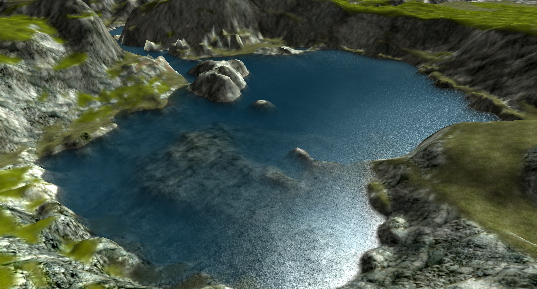
Rotating a river
The Rotate Tool can be used to rotate a river at any selected control point. To activate the Rotate Tool click its icon on the Tool Selector. The rotate gizmo will appear.
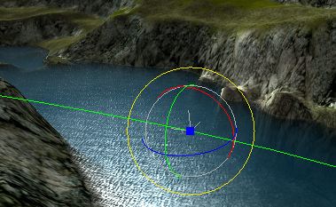
Rotating a river at each control in along the path of a river can make a river appear to be flowing downhill as opposed to a flat surface as is created by default.
The following image shows what a finished river could look like after editing.
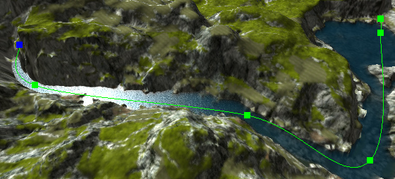
Adding extra Points
The Insert Point tool can be used to add extra points in a river to create a smoother curve. In order to insert a new point into a river the river must first be selected. See the Selection Tool above for details on how to select a river. To activate the Insert Point tool once a river has been selected click its icon 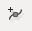 on the Tool Selector bar. To place a new point on the selected river click on the river where you would like the new point to be placed. A new point will be added to the river and will immediately the currently selected point as indicated by the blue square.
Removing Points.
The Remove Point tool can be used to delete a control from a river. In order to remove a new point from a river the river must first be selected. See the Selection Tool above for details on how to select a river. To activate the Remove Point tool click its icon 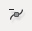 on the Tool Selector bar. To remove a control from the selected road point click on the control point. This will remove only the selected point leaving all the others in place. No adjustments will be performed on the other existing control points.
Properties
The Properties pane on the right side of the screen can be used to configure or modify various facets of the river object, such as its flow, colors, underwater effects, etc.
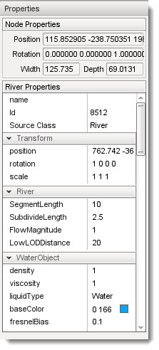
Transform
This section contains properties which control the placement, rotation and scale of the River as a whole.
Position: Indicates the position of entire River in the level.
Rotation: Indicates the rotation of the entire River in the level.
Scale: Indicates the scale of the entire River in the level.
River
This section contains properties which control how the River is rendered which in turn will have an effect on the wave settings.
Segment Length: The river will be divided into segments of this length, in meters.
Subdivide Length: River segments will be subdivided in a way that each quad (four-sided polygon) is not any wider or longer than this distance in meters.
Flow Magnitude: The magnitude of the force vector applied to dynamic objects that are within the River. This will affect how thing floating or suspended in the water are driven by the flow of the river.
Low LOD Distance: Segments of the river at this distance in meters or more will be rendered as a single un-subdivided area without any undulation wave effects.
Water Object
This section contains properties that control the look and action of the water and contains several sub-sections:
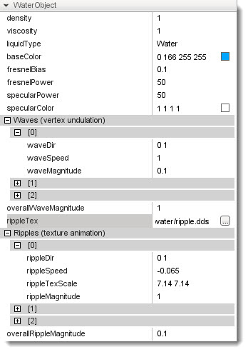
Density: Affects the buoyancy of an object entering the water.
Viscosity: Affects a submerged object's drag force.
Liquid Type: Type of datablock used to represent the type of liquid contained in the river (i.e. water, lava, etc.)
Base Color: Changes the color of the underwater fog which has the effect of coloring the water surface.
Fresnel Bias: Extent of Fresnel (reflection level based on viewing angle) affecting reflection fogging
Fresnel Power: Measures the intensity of the effect on the
reflection, based on fogging.
(click to enlarge)
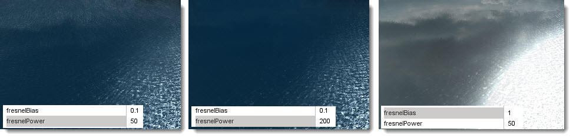
Specular Power: Power used for secularity (lighting reflection) on the water
surface (sun only)
Specular Color: Specular color used for the water surface (
sun only )
Waves
This sub-section contains properties that control the undulations on the water. Note: This effect actually moves the vertices of the mesh.
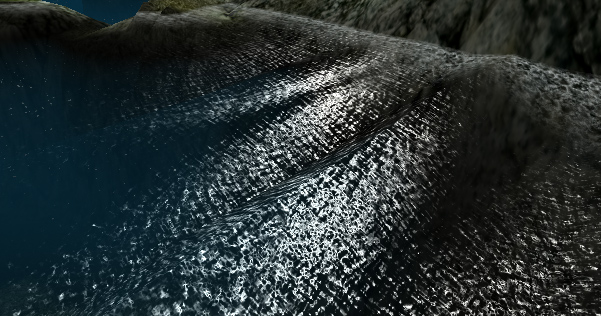
This section has further sub-sections for controlling three wave sets, each sub-section is composed of the following properties that define the wave set:
Wave Dir: A vector describing the direction the waves flow towards the river banks.
Wave Speed: Speed of the wave undulation.
Wave Magnitude: Height of the wave.
Two properties control the overall wave action:
Overall Wave Magnitude: This master parameter affects the depth of all the wave subsets, like a global wave height parameter.
Ripple Texture: The Normal map used for simulating the surface ripples.
Ripples
This sub-section contains properties that control the animation that simulates the effect of ripples bouncing off the river bank. This animation is performed using normal map to represent the ripples. This section has further sub-sections for controlling three ripple sets, each sub-section is composed of the following properties that define the ripple set:
Ripple Dir: A vector that modifies the surface ripple direction.
Ripple Speed: Controls the ripple speed.
Ripple Tex Scale: Intensifies the affect of the surface ripples by scaling the texture.
The Ripples sub-section also contains two properties that control the overall ripple effect:
Ripple Magnitude: Intensifies the ripple effect.
The Ripples sub-section also contains two properties that control the overall ripple effect:
Overall Ripple Magnitude: This parameter affects the depth of all the ripple subsets, like a global ripple intensity variable.
Foam Tex: The texture used to render the ripple effect.
Hint: Turn up the ripple magnitude if you want to see ripples
when looking up from underwater.
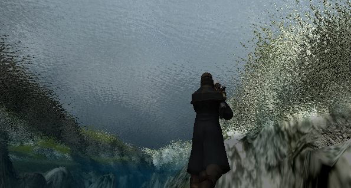
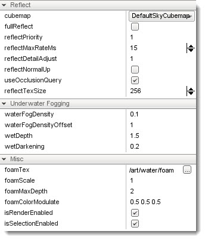
Reflect
This section contains properties that control the rendering of surface reflections:
CubeMap: Cubemap to use instead of the default reflection texture, which is the current sky, if Full Reflect is turned off. Handy if you have not yet set up a sky for your project.
FullReflect: Enables dynamic reflection rendering, which causes the water surface to reflect the current sky, if available.
Reflect Priority: Affects the sort order of reflected
objects.
Reflect Max Rate Ms: Affects the sort time of reflected
objects.
Reflect Detail Adjust: Scale up or down the detail level
for objects rendered in a reflection.
Reflect Normal Up: The reflection normal.
Use Occlusion Query: Turn off reflection rendering when
occluded.
Reflect Text Size: Texture size used for the reflections.
Underwater Fogging
This section contains properties that control how the underwater view appears:
Water Fog Density: The intensity of the underwater fogging.
(click to enlarge)
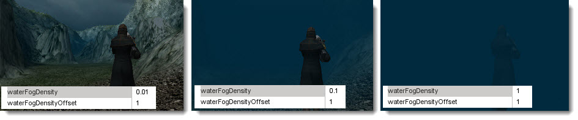
Water Fog Density Offset: The offset distance before the fogging
occurs.
(click to enlarge)
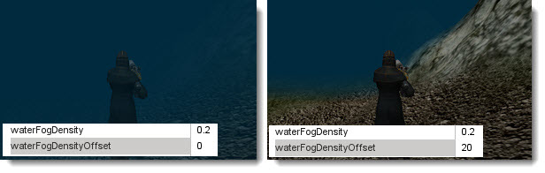
Wet Depth: The depth in world units at which full darkening will
occur, giving a wet look to objects underwater.
Wet Darkening: The refract color intensity scaled to the depth of the
player (wetDepth). The deeper under the water you go, the darker it will get.
(click to enlarge)
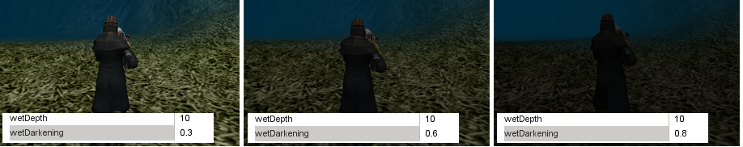
Misc
Other uncategorized properties.
Depth Gradient Tex: Texture for the gradient as the players moves
deeper.
Depth Gradient Max: Maximum depth for the gradient texture.
Foam
Foam Opacity:Overall foam opacity.
Foam Max Depth: The depth that the foam will be visible
from underwater.
Foam Ambient Lerp: An RGB color value that interpolates
linearly between the base foam color and ambient color.
This prevents bright white colors be viewable during situations such as
Night.
Foam Ripple Influence: Intensity of the foam effect on ripples.
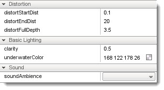
Distortion
This section contains properties that control how the water distorts the under water terrain when viewed from above.
(click to enlarge)
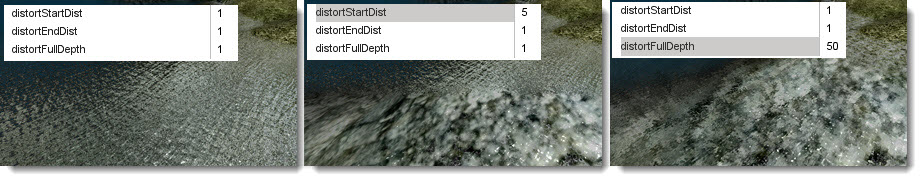
Distort Start Dist: Determines the start of the
distortion effect from the camera.
Distort End Dist: Max Distance that the distortion
algorithm is performed. Lower values will show more
of the distortion effect.
Distort Full Depth: Sets the scaling down value for the
distortion in shallow water. The lower the value the more
the distortion will be applied to the shallow area.
Basic Lighting
This section contains properties that control the basic lighting effects on and in the water:
Clarity: Opacity or transparency of the water
surface.
Underwater Color: Changes the color shading of objects
beneath the water surface
Sound
This section contains properties that control sound under the water:
Sound Ambience: Ambient sound environment for when the
listener is submerged.
Editing
This section contains properties that control whether the river can be edited:
isRenderEnabled: Toggles whether the object is rendered on the client.
isSelectionEnabled: Toggles whether the object can be selected in the tools.
hidden: Toggles whether the object is visible.
locked: Toggles whether the object can be edited.
Mounting
This section contains properties that control whether the river can be mounted to another world object, for example a sewer pipe or a cave:
mountPID: PersistentID of object we are mounted to.
mountNode: Node we are mounted to.
mountPos: Position where object is mounted.
mountRot:Rotation where object is mounted.
Object
This section contains properties that control whether the river object is persistent in the world.
internalName: Internal name of this object.
parentGroup: Group to which this object belongs.
class: Class to which this object belongs.
superClass: SuperClass to which this object belongs.
Persistence
This section contains properties that control whether the river object is persistent in the world.
canSave: Whether the object can be saved to the mission file.
canSaveDynamicField: Whether dynamic properties are saved at runtime.
persistentID: Unique ID of this object.
Conclusion
In this article we covered how to use the Torque 3D River Editor to create a river and a small body of water, as well as reviewed the properties of a river object and how affect it. With time and care you can create some very satisfying rivers, and best of all, you can make your player character interact with them. Try entering the river with the main character in third person mode, he will now have buoyancy and be able to swim.
Remember to save often and have fun creating your new rivers!
|
{kind=link}
{kind=link}
{kind=link}
{kind=link}
{kind=link}
{kind=link}
{kind=link}